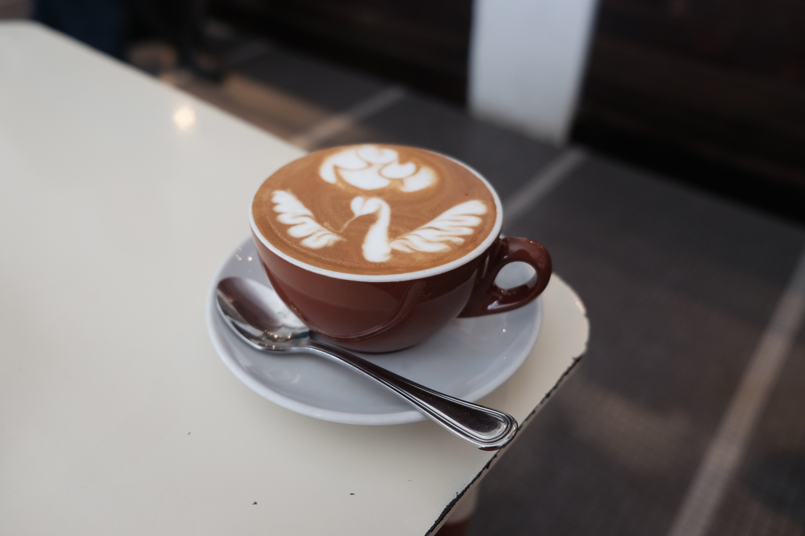
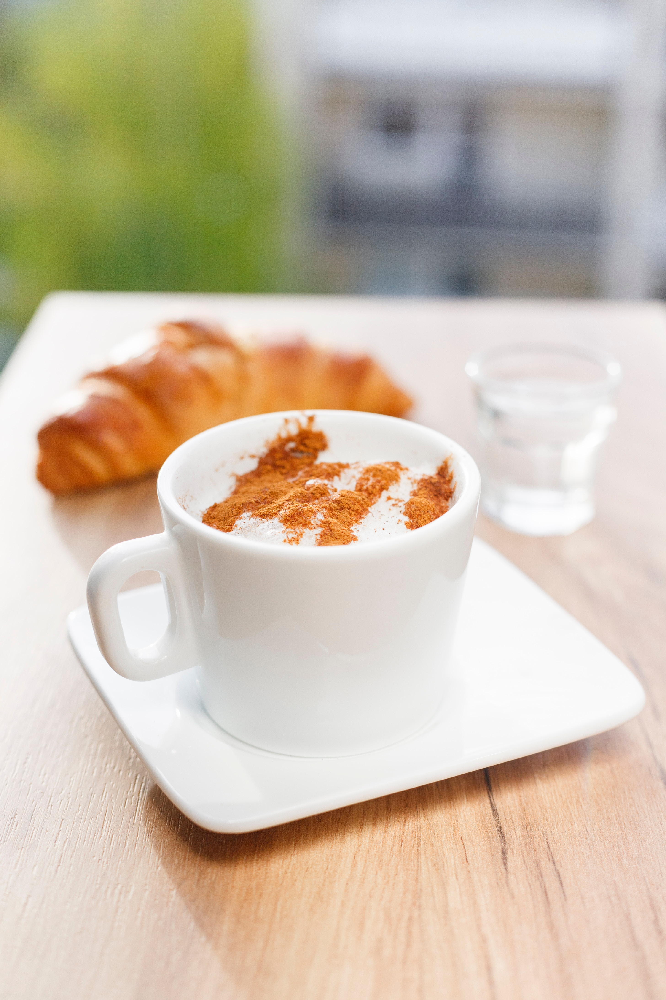

Latte
Pumpkin Spice
Espresso
Hours
Sunday - Thursday: 2 PM - 12AM
Friday-Saturday: 2 PM - 2AM
Established in 2017 and we operate a cafe that serves the best roasted beans in Cleveland!
We have classic board games such as Operation & Battleship to play with, plus all of the new ones such as Settlers of Catan including the expansion packs.
We have our own record player, and you're welcome to bring your personal records for our in house DJ to play.
Come enjoy our small bowling game that you can use for free, plus enjoy our complementary WIFI.
Besides selling coffee, we also sell beer! You're encouraged to order in or bring in your own food.


Michael has created StartMart Cafe after working as a manager at Starbucks. He wanted a better community feel without the chain aspect.
He brings years of experience with him and hopes to enjoy a cup Joe with all of his customers!